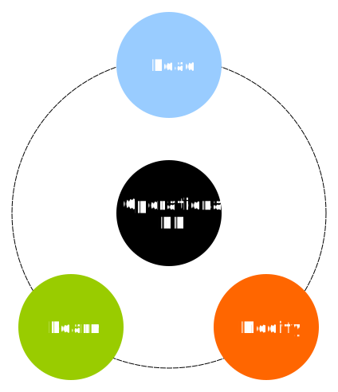

Database Systems

Wojciech Barczynski (WSB, 2021)
ATM

Operations
- Read Balance
- Update Balance
- Give Money
ATM
Operations
- Read Balance
- Give Money
- Update Balance
Standard DB

Supporting
- Scale
- Speed
- Stability
- Reliability